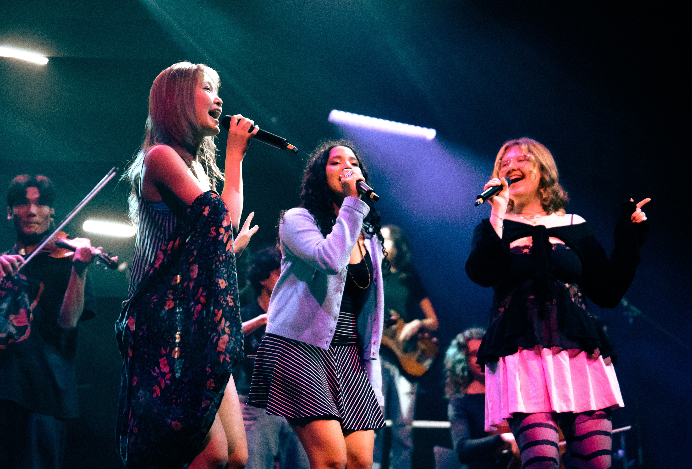
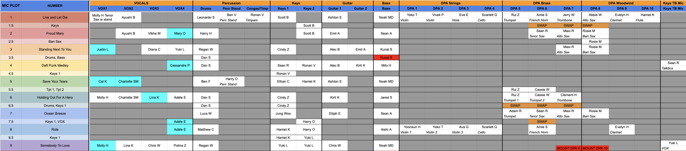
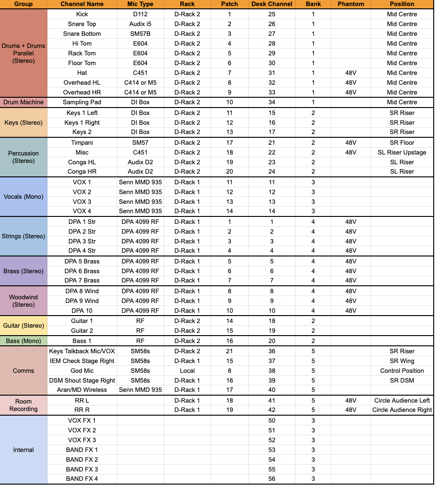
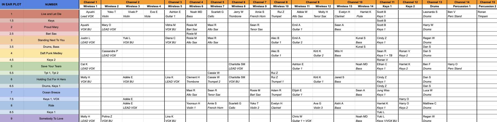

Rhapsody 2026 - UCL Live Music Society
Role: Sound Designer/No. 1
5-7 February, Bloomsbury Theatre
Production Photography by Frederike Buchanan.
Jump to Technical Details | Reviews

Overview
Rhapsody 2026 is the latest iteration of UCL Live Music Society’s Bloomsbury Theatre programming, featuring an 80-strong cast performing a variety of musical numbers over the 2.5-hour show.
As Sound Designer and No. 1, I was responsible for designing and operating the live audio system for the concert, including in-ear monitor setup for the cast, microphone deployment, stage plot planning, live mixing, and coordination with the lighting designer and stage management team.
This production was particularly notable as the first in 12 years to equip the entire cast with in-ear monitors, allowing for clear monitoring across a wide variety of acts and ensembles. I worked closely with the Lighting and Set Designers to ensure even sound distribution across the auditorium while managing over 250 mic and in-ear swaps throughout the performance.

Technical Details
Console
- DiGiCo SD9
Audio System & Monitoring
- First Rhapsody in 12 years to use in-ear monitors for all cast members
- 10 wireless DPA instrument channels, 4 wireless handhelds, 2 wireless guitars, 1 wireless bass
- Wired instruments include 2 Keyboards, Drums, and Percussion
- 10 channels of wireless in-ears across 14 packs
- 5 channels of wired in-ears
- Wrote stage plot covering 250+ mic and in-ear swaps
- Upgraded and optimised theatre sound system for concert use
- Worked closely with lighting and set designer to ensure even sound distribution
- First Rhapsody to allow for a full multi-track recording of the performance. By using 2 D-Racks, MADI ports on the desk were left free for USB multitrack recording
Responsibilities
- Designed mic and in-ear stage plot
- Mixed the live show, and programmed over 180 custom in-ear mixes
- Coordinated the sound department and ensured smooth collaboration with lighting, set, and stage management



Reviews
★★★★★ — Go Kitajima, Cheese Grater Magazine | Full Review Here
One area that truly shined was the incredible work by the crew, especially by lighting designer Aran Baskar and sound designer Rahul Kumar.
Mixing can often be an unsung hero in theatre, with it not being as overtly in-your-face, but given the sheer number of cast and the sizes of some of the bands, it would be an injustice for it to go unmentioned.


